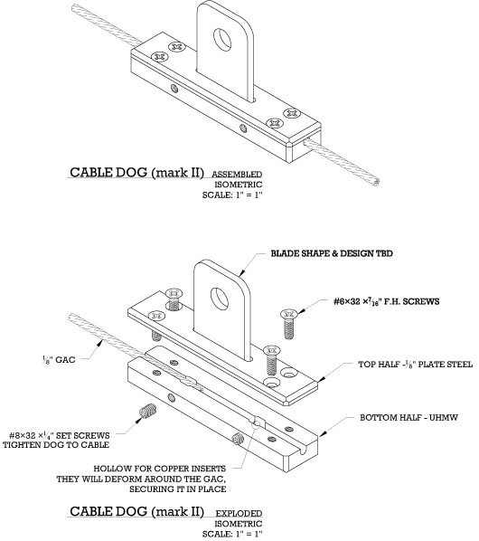

This is the mark II design for the tiny track dog I posted earlier. This version features a sandwich style construction, which has several benefits over the mark I design.

Securing the aircraft cable through this dog should be vastly easier than the first version. It’s as simple as two set screws, a few copper inserts, and four flat head machine screws. Machining the cable path in the first version wasn’t too hard, but cleaning meeting two small, blind holes 135 degrees apart did prove a challenge. As a result, threading the cable through dog #1 was an exercise in aggravation, something I do not care to repeat.
You’ll notice the top part of the sandwich is steel, which allows us to weld the knife in place through a milled slot. Since we’re still waiting on details of the tracking furniture, we can build the dog now and leave the knife design for later. Also, dog #1 featured a removable knife, which is nifty, but seriously impractical at such a small size.
Speaking of size, this dog will be the same as the last one - 15/32" x 3/4" x 3 1/2".
The shop should get one of these built within the next few weeks. Perhaps I’ll find enough time to slink away from the office and do it myself. In either case, I’ll post an update, and let you know if all my wishful thinking was for naught.